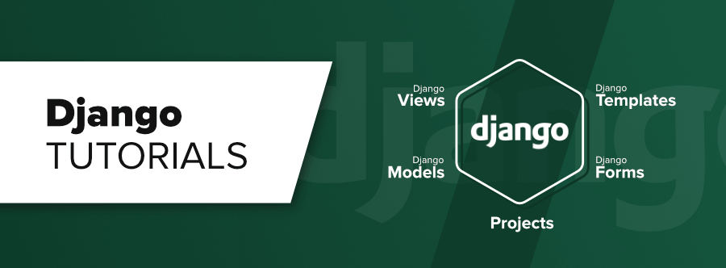
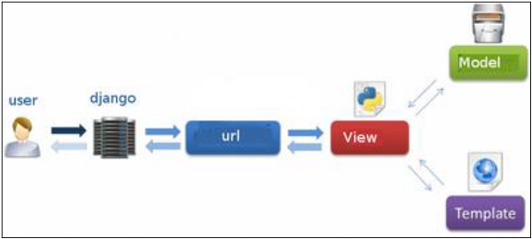

Your browser doesn't support the features required by impress.js, so you are presented with a simplified version of this presentation.
For the best experience please use the latest Chrome, Safari or Firefox browser.
By Farzad Latifnia
Django 3.x
Continue the previous tutorial Python 3 (Prerequisite)

Introduction
- Django is a high-level Python web development framework that assists in building and maintaining quality web applications.
- Django helps eliminate repetitive tasks making the development process an easy and time saving experience.
- Django makes it easier to build better web apps quickly and with less code.
Prerequisites
Before you proceed, make sure that you understand the basics of procedural and object-oriented programming:
- control structures
- data structures and variables
- classes and objects
- HTML-CSS-JS(jquery)
- Ajax(XMLHttpRequest)
- Networking
- etc ...
Why Django?
With Django, you can take Web applications from concept to launch in a matter of hours. Django takes care of much of the hassle of Web development, so you can focus on writing your app without needing to reinvent the wheel. It’s free and open source.
Ridiculously fast
Django was designed to help developers take applications from concept to completion as quickly as possible.
Fully loaded
Django includes dozens of extras you can use to handle common Web development tasks. Django takes care of user authentication, content administration, site maps, RSS feeds, and many more tasks — right out of the box.
Reassuringly secure
Django takes security seriously and helps developers avoid many common security mistakes, such as SQL injection, cross-site scripting, cross-site request forgery and clickjacking. Its user authentication system provides a secure way to manage user accounts and passwords.
Exceedingly scalable
Some of the busiest sites on the planet use Django’s ability to quickly and flexibly scale to meet the heaviest traffic demands.
Incredibly versatile
Companies, organizations and governments have used Django to build all sorts of things — from content management systems to social networks to scientific computing platforms.
History of Django
- 2003 − Started by Adrian Holovaty and Simon Willison as an internal project at the Lawrence Journal-World newspaper.
- 2005 − Released July 2005 and named it Django, after the jazz guitarist Django Reinhardt. Mature enough to handle several high-traffic sites
- Current − Django is now an open source project with contributors across the world.
Django–Design Philosophies
- Loosely Coupled
- Less Coding
- Don't Repeat Yourself (DRY)
- Fast Development
- Clean Design
Advantages of Django
- Object-Relational Mapping (ORM) Support
- Multilingual Support
- Framework Support
- Administration GUI
- Development Environment
Django MVC - MVT Pattern
- Model-View-Template (MVT)
- Django Template Language (DTL)

Installing Django
- Check python (ver.3)
- Install pip3 (for python 3)
- python3 -m venv myvenvname(default installed virtualenv for python3 on Centos8)
- git clone https://github.com/django/django.git (Download)
- pip3 install django==2.2(Install)
- Verifying :
$/> python -m django --version
***or in shell***
>>> import django
>>> print(django.get_version())
Django - Creating a Project
Django - Create an Application
Django - Starting the Admin Interface
- python manage.py migrate (after first installing Django and creating a project)
- python manage.py createsuperuser
- configured a URL for our admin interface
- python manage.py runserver
Django - Creating Views
from django.http import HttpResponse
def hello(request):
text = """<h1>welcome to my app !</h1>"""
return HttpResponse(text)
Django - Components
- Django URL Mapping
- Django Views
- Django Forms
- Django Models
- Django Templates
It’s a presentation tool
inspired by the idea behind prezi.com
and based on the power of CSS3 transforms and transitions in modern browsers.
visualize your big thoughts
by positioning, rotating and scaling them on an infinite canvas
the only limit is your imagination
have you noticed it’s in 3D*?